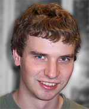

Jonathan Way, PhD
Areas of Study
- Ethics
- Practical Reason
- Action Theory
Info
Research Abstract
My research focuses on issues in ethics and practical reason. My PhD dissertation addresses problems about instrumental rationality and defends a version of the ‘wide-scope’ account of instrumental reason. For some details see my dissertation abstract or my paper, ‘Defending the Wide-Scope Approach to Instrumental Reason’. I am also interested in areas of epistemology and the philosophy of mind. My MA thesis discussed our knowledge of our own actions and intentions. A central argument from my thesis is developed in my paper, ‘Self-Knowledge and the Limits of Transparency’. In future work I plan to address two issues that arise from my doctoral research: the interpretation and defensibility of the common claim that rationality involves responding to reasons, and the nature and status of the distinction between object-given and state-given reasons. At some point I’d also like to do some work on the relationship between epistemic and practical rationality.
Selected Bibliography
Published Papers
“Defending the Wide-Scope Approach to Instrumental Reason”, Philosophical Studies, published online October 2008.
In this paper I outline the version of the wide-scope approach I favor, by showing how it avoids three problems — the normativity problem, the transmission problem, and the evil demon problem — for standard wide-scope views.
“Self-Knowledge and the Limits of Transparency”, Analysis 67 (July 2007): 223–30
In this paper I argue against accounts of our first-person knowledge of our attitudes which give a central role to the transparency of many of our attitudes — our capacity to answer the question of whether we have an attitude by answering the question of whether to have it. I argue that there are clear cases of first-person knowledge of attitudes which are not transparent.